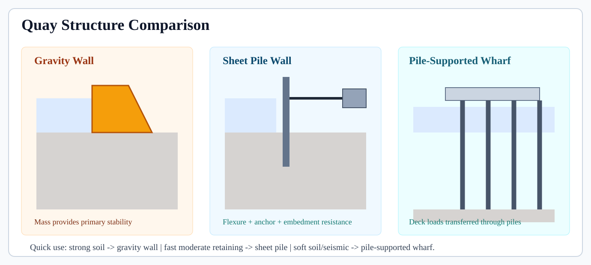
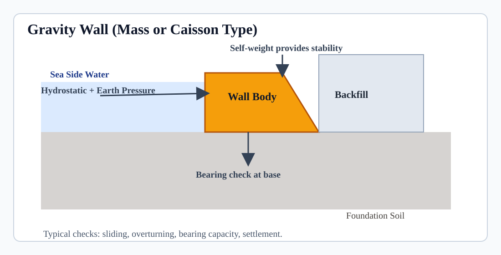
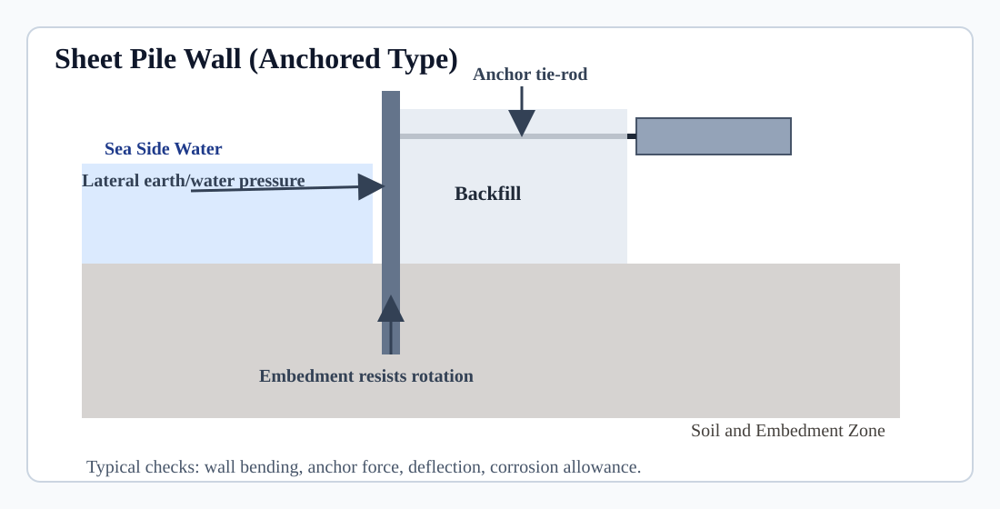
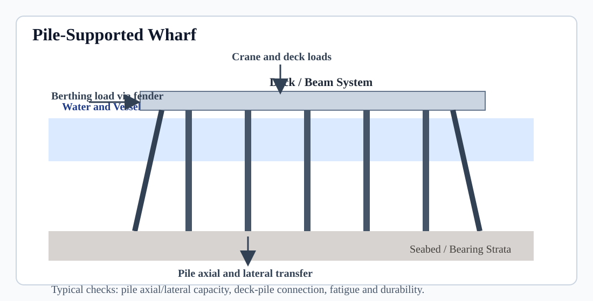
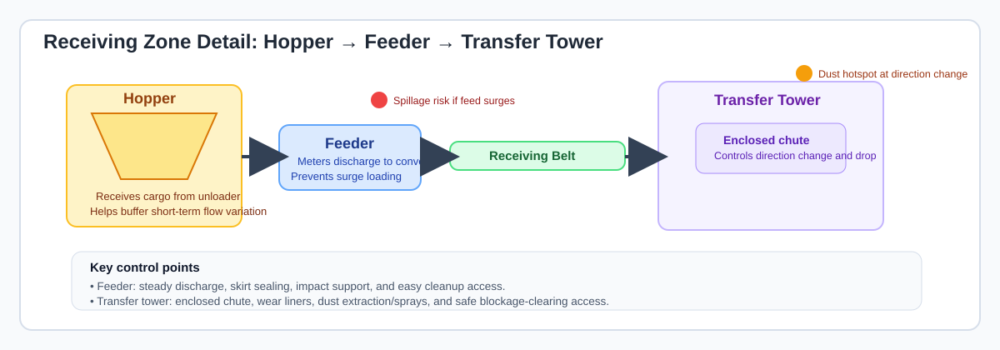
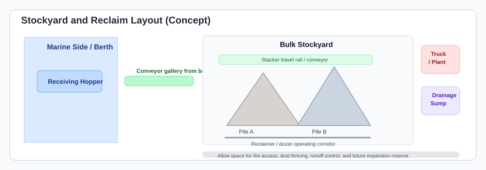
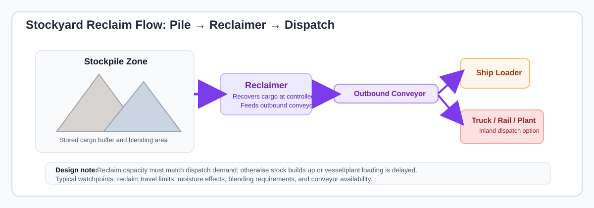
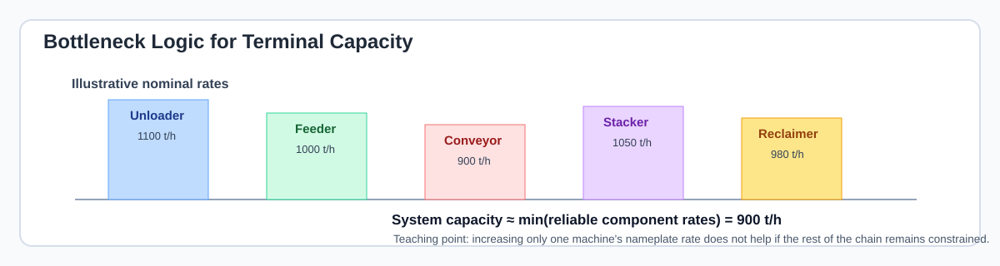

Water Level Logic
Use additive components to define design high water and check freeboard adequacy.
DHWL = Tide + Surge + Setup + SLR
Course Website – Prof. Ahmad Perwira Mulia
Learning Objectives:
Key Topics:
Lecture Overview:
Both container and non-container terminals modernized during the same era, but followed different engineering logics. Containerization focuses on standardization and unit handling, while bulk systems focus on high-volume mechanized flow.
Ports are critical nodes in global and national supply chains, enabling the movement of goods, energy, and raw materials. Approximately 80–90% of world trade by volume is transported by sea, making port infrastructure a strategic economic asset. For an archipelagic country such as Indonesia, ports are not only international gateways but also essential connectors between islands, production centers, and consumption markets.
Port engineering is an interdisciplinary field integrating coastal hydrodynamics, geotechnical engineering, structural design, and terminal operations. The design of a port must consider wave transformation, tidal range, storm surge levels, sediment transport mechanisms, and long-term morphological evolution.
From a structural standpoint, quay walls, breakwaters, and berthing structures must withstand lateral earth pressures, mooring loads, ship impact forces, and cyclic environmental loading. Geotechnical investigation is critical to assess bearing capacity, settlement, liquefaction potential, and soil–structure interaction.
Operational efficiency is equally important. Engineers must evaluate berth occupancy ratio (BOR), turnaround time, cargo handling rate (tons/hour or moves/hour), storage capacity, and hinterland connectivity. Sustainable design requires balancing technical feasibility, economic viability, environmental protection, and long-term maintenance strategy.
| Terminal Type | Main Flow Logic | Primary Unit | Key Engineering Constraints | Main Performance Indicator | Typical Equipment |
|---|---|---|---|---|---|
| Dry Bulk | Berth → Conveyor → Stockyard | Tons | Draft depth, sedimentation, dust control | Tons/hour, Berth Occupancy Ratio | Grab ship unloader, conveyor belts, stacker-reclaimer |
| General Cargo (Break-bulk) | Berth → Crane → Transit Shed/Yard → Gate | Tons | Weather exposure, cargo variability, crane capacity | Tons/hour, Ship turnaround time | Mobile harbor crane, forklifts, reach stackers |
| Multipurpose Terminal | Berth → Mixed Handling (Crane/Grab/Hopper) → Yard/Shed → Gate | Tons (and sometimes TEU) | Layout flexibility, equipment scheduling, cargo contamination risk, variable vessel mix | Tons/hour, Berth Occupancy Ratio, Yard utilization | MHC (mobile harbor crane), forklifts, reach stackers, grabs/hoppers, trucks |
| Container | Berth (STS) → Yard (RTG/RMG) → Gate | TEU | Yard congestion, crane productivity, gate flow | Moves/hour, Dwell Time | STS cranes, RTG/RMG cranes, terminal tractors |
| Liquid Bulk | Berth → Pipeline → Storage Tanks | Tons or m³ | Safety, leakage control, fire protection | Pumping rate, Tank utilization | Loading arms, pumps, pipelines, storage tanks |
| Car (Ro-Ro) | Ramp → Parking Yard → Gate | Units (vehicles) | Space planning, traffic circulation | Units/day, Yard turnover | Ro-Ro ramp, internal trucks, yard marshaling system |
Each terminal type has different engineering constraints, operational performance indicators, and infrastructure requirements. Port engineering must therefore adopt a cargo-specific design and operational approach.
Multipurpose terminals are common in developing and archipelagic economies such as Indonesia. Rather than specializing in a single cargo type, these terminals are designed for operational flexibility, allowing them to handle dry bulk, general cargo, project cargo, and occasionally containers within the same berth area. While this flexibility improves asset utilization and market adaptability, it typically results in lower peak productivity compared to highly specialized terminals.
Globally, container port throughput has been expanding steadily, with world container traffic tracked in multiple industry indices and reports. Singapore’s port terminals, which remain among the busiest in the world, handled more than 40 million TEUs in 2024–2025, reflecting its role as a global transshipment hub. :contentReference[oaicite:0]{index=0} By contrast, Indonesia’s total container port throughput — including major ports across the Pelindo network — has been reported in the order of approximately 12 – 13 million TEUs in recent years, indicating substantial room for growth in international connectivity and hub status. :contentReference[oaicite:1]{index=1} This global–regional comparison highlights both the strategic opportunity and competitive gap for Indonesian ports in the containerized cargo segment.
In terms of seaborne trade volume, maritime transport continues to carry the vast majority of global goods. While precise global tonnage figures vary by source, maritime shipping moves tens of billions of tonnes of cargo annually across the world economy. :contentReference[oaicite:2]{index=2} Within this broader context, Indonesia’s annual non-container cargo throughput is estimated at approximately 1.7 billion tonnes. Of this volume, around 110 million tonnes are handled through terminals managed by SPMT, indicating an estimated market share of roughly 6–7%. This comparison between global volume, national container throughput, and SPMT’s share underscores both the scale of maritime trade and the potential for portfolio specialization, infrastructure optimization, and modal connectivity in the non-container cargo sector.
This course is structured in three progressive stages:
Port engineering requires systems thinking. Decisions on dredging depth, quay wall design, or yard layout directly affect operational efficiency, safety, and long-term competitiveness. Engineers must integrate physical coastal processes with logistics performance and economic feasibility.
A well-designed port is not only structurally stable, but also operationally efficient and strategically adaptable.
By the end of the semester, students should be able to connect coastal processes, terminal design, and operational strategy into a coherent port engineering framework.
Students are encouraged to consult these materials to deepen their understanding beyond classroom discussions.
Students attending today’s session are required to fill in the attendance form.
Click here to record your attendance
Students may submit questions or suggestions through the form below:
OPEN SEA
~~~~~~~~~~~~~~~~~~~~~~~~~~~~~~~~~~~~~~~~~~~~~~
Incoming Waves →
[ Breakwater ]
########################################
# #
# PORT BASIN (Calm Water) #
# #
# [Container Terminal] [Bulk Terminal]
# Quay + Yard Unloader→Conveyor
# #
########################################
↑ Port Entrance
|
==============================
Navigation Channel
==============================
Inland / Hinterland
-------------------------------------------------
Storage Yards Warehouses Truck Gates
-------------------------------------------------
Wave direction → → → → →
↘ Diffraction around breakwater → wave penetration at entrance
Longshore sediment transport → channel-mouth siltation zone
River discharge ↓ (estuary ports) → suspended sediment plume → basin siltation
River
↓
~~~~~~~~~~~~~
Estuary Mouth
↓
Navigation Channel (dredged)
↓
Port Basin (dredged)
| |
Multipurpose Terminal Tank Farm (pipelines)
Build reliable port elevations and depths by combining tides, storm effects, and wave behavior under one consistent datum framework.
Use additive components to define design high water and check freeboard adequacy.
DHWL = Tide + Surge + Setup + SLR
Assess Hs, Tp, and direction to estimate berth agitation and operability constraints.
Risk increases with higher Hs, longer Tp, poor direction
Quick focus: one datum, transparent assumptions, and return period matched to consequence.
Ports must be designed for both high-water and low-water operational conditions. High-water conditions control overtopping and crest elevations, while low-water conditions control navigation depth, under-keel clearance, and berth accessibility.
Conceptual extreme high-water expression:
Design High Water Level (DHWL)
= Astronomical Tide + Storm Surge + Wave Setup + Sea Level Rise Allowance
Conceptual design depth expression:
Required Channel/Harbor Depth
= Vessel Draft + UKC + Squat + Motion Allowance + Safety Margin
The figures below help students visualize how different design water levels are measured from the same reference datum. In this example, Chart Datum (CD) is used as the vertical reference.
Offshore wave climate is typically summarized by three core descriptors: Hs, Tp, and wave direction. Together, they define the energy level, timing, and approach angle of incoming waves.
In engineering screening, a useful interpretation is: higher Hs + longer Tp + unfavorable direction generally means higher overtopping risk and poorer operability at exposed berths.
Offshore Waves
-> Shoaling (height/length changes with depth)
-> Refraction (direction changes due to bathymetry)
-> Diffraction (energy spreads around breakwater heads)
-> Breaking / Dissipation
-> Residual Agitation in Harbor Basin
Design conditions are linked to target reliability. More critical structures use rarer events (longer return periods), while lower-consequence assets may use shorter return periods to balance CAPEX and residual risk.
| Component | Typical Return Period Range | Main Design Concern |
|---|---|---|
| Breakwater crest and armor | 50-100 years (or project-specific) | Overtopping, structural stability, service continuity |
| Quay deck elevation | 25-100 years (depends on consequence) | Flooding risk, operability during high water |
| Channel and basin depth | Operational low-water criteria | Under-keel clearance, navigation safety |
Instructions: Answer individually first, then compare with your group.
Breakwater design balances wave attenuation, structural stability, and constructability under local metocean and geotechnical constraints.
Limit transmitted wave and overtopping so basin tranquility and quay operability targets are achieved.
Input: Hs, Tp, direction, water level, bathymetry
Ensure armor and toe remain stable and settlement stays within serviceability limits.
Check: armor weight, slope, toe, foundation, maintenance
Quick focus: hydraulic adequacy without geotechnical reliability is not a safe design.
Typical selection drivers: wave climate severity, water depth, available materials, construction fleet, seabed condition, and lifecycle OPEX.
Seaside
~ Wave attack ~
Armor Layer (primary protection)
Underlayer
Filter Layer
Core Material
------------------------------ Crest
Landward Slope
Toe Berm (anti-scour / anti-sliding)
Seabed
The ranges below are preliminary teaching values. Final gradation and unit weight must be set from hydraulic design, quarry availability, and geotechnical checks.
| Layer | Typical Material | Typical Size / Unit Weight (Order of Magnitude) |
|---|---|---|
| Armor layer | Large quarry rock or concrete armor units | About 1-10 t per unit (site-dependent) |
| Underlayer | Graded quarry rock | Commonly 10-20% of armor unit weight |
| Filter layer | Well-graded gravel/crushed rock, or geotextile filter system | About 10-200 mm aggregate (or engineered filter fabric) |
| Core | Quarry run / core rock | Typically coarse fill, often about 5-300 mm |
| Rear slope protection | Smaller rock than sea-side armor (often underlayer grade) | Commonly below sea-side armor size; project-specific |
| Toe berm | Heavy quarry rock / toe protection rock | Often about 0.3-5 t per unit depending scour and wave attack |
For early-stage sizing of armor units on rubble mound slopes, a common conceptual form is:
W = gamma_r * H^3 / (K_D * (S_r - 1)^3 * cot(theta))
Use this as a screening tool. Final design should be confirmed with detailed hydraulic and structural checks, and where needed, physical/numerical model support.
Assume a preliminary trunk-section check with: H = 3.0 m, K_D = 3.0, S_r = 2.65, cot(theta) = 2.0 (about 1V:2H slope), and gamma_r = 26 kN/m^3.
Why these values were selected (teaching assumptions):
In real projects, these parameters are refined from material testing, selected armor type/placement method, and the applicable design guideline for trunk vs head conditions.
W = gamma_r * H^3 / (K_D * (S_r - 1)^3 * cot(theta))
= 26 * 3.0^3 / (3.0 * (2.65 - 1)^3 * 2.0)
= 26 * 27 / (3.0 * 1.65^3 * 2.0)
= 702 / 26.95
= 26.1 kN (approx.)
Equivalent mass is about 2.7 t per armor unit (26.1/9.81). This is a screening result only; final sizing should be adjusted for location (trunk vs head), overtopping criteria, construction method, and project-specific guidance.
Assumptions:
Volume: V = m / rho = 2700 / 2650 about 1.02 m^3
Sphere relation: V = pi*d^3/6
Diameter: d = (6V/pi)^(1/3)
d = (6*1.02/pi)^(1/3) about 1.25 m
So, an equivalent round-rock diameter is about 1.25 m. In practice, natural armor stones are not perfect spheres, so nominal stone size is usually described by grading bands rather than one exact diameter.
Assumptions:
Volume: V = m / rho_c = 2700 / 2446 about 1.10 m^3
Sphere relation: V = pi*d^3/6
Diameter: d = (6V/pi)^(1/3)
d = (6*1.10/pi)^(1/3) about 1.28 m
Equivalent spherical diameter for a 2.7 t concrete unit is about 1.28 m, slightly larger than the rock case because typical concrete density is lower than dense quarry rock used in this example.
Important modeling note: when material changes from rock to concrete, Hudson inputs must be updated consistently. Use concrete-based gamma_r and concrete-based S_r in the formula. In addition, K_D should be reviewed for the selected armor type and placement method (natural rock versus concrete armor units).
Given a preliminary design wave height increase from 2.0 m to 2.5 m, Hudson logic implies armor weight scales with H cubed. Therefore weight ratio is (2.5/2.0)^3, approximately 1.95. In other words, a modest wave-height increase can nearly double required armor weight, strongly affecting quarry demand, transport, and CAPEX.
Instructions: Answer individually, then compare assumptions in pairs.
This lecture builds a complete concept-level framework for selecting quay structures, estimating berthing demand, and checking preliminary structural reliability.




Final concept selection should combine geotechnical evidence, constructability, lifecycle cost, and expected terminal operations.
A common concept form for berthing energy is:
E = 0.5 * M * V^2 * C_M * C_E * C_S * C_C
Design principle: fender selection must satisfy both energy absorption and acceptable reaction transfer into the berth structure.
Assume M = 6.0e7 kg, V = 0.15 m/s, C_M = 1.10, C_E = 0.90, and other coefficients = 1.0.
E = 0.5 * 6.0e7 * (0.15)^2 * 1.10 * 0.90 = about 6.68e5 J = about 668 kJ
With concept-stage margin, required fender energy class may be around 1000 kJ. The corresponding fender reaction must then be checked against wall/deck/pile capacity.
ULS represents a condition beyond which the structure can no longer carry loads safely, leading to collapse, instability, or structural failure. Design codes require that the probability of reaching ULS must be acceptably low over the structure's design life.
Formally: design effect of actions ≤ design resistance, applying partial safety factors to both load and material/resistance sides.
| Check | Structure Type | What It Verifies | Typical Acceptance Criterion |
|---|---|---|---|
| Sliding | Gravity wall | Horizontal resistance at base ≥ horizontal actions | Sliding safety factor ≥ 1.5 (unfactored); or design to partial-factor format per applicable code |
| Overturning | Gravity wall | Restoring moment ≥ overturning moment | Overturning safety factor ≥ 1.5–2.0 (unfactored); eccentricity of base resultant within middle-third |
| Bearing capacity | Gravity wall, sheet pile | Foundation soil can support applied loads without failure | Design bearing pressure ≤ allowable (ULS: typically factor ≥ 2.5–3 on ultimate capacity; or partial-factor per Eurocode/SNI) |
| Global stability | All types on soft soil | Mass-sliding/rotational failure through soil not triggered | Factor of safety on shear strength ≥ 1.3–1.5 (slope stability analysis) |
| Wall bending and shear | Sheet pile wall | Maximum moment and shear ≤ section capacity | Utilisation ratio ≤ 1.0 after partial factors; typically to EN 1993 or equivalent steel standard |
| Anchor/tie-rod capacity | Sheet pile wall | Tie force ≤ yield capacity with adequate safety | Factor of safety ≥ 2.0 on yield; or partial-factor code check |
| Pile axial capacity | Pile-supported wharf | Pile compression and tension ≤ geotechnical and structural capacity | Geotechnical factor of safety ≥ 2.0–2.5 on ultimate pile capacity; structural utilisation ≤ 1.0 |
| Pile lateral capacity | Pile-supported wharf | Lateral demand (berthing, seismic, mooring) ≤ pile-soil resistance | p-y analysis; utilisation ≤ 1.0 at pile head and critical depth sections |
| Deck local strength | All deck structures | Punching, shear, and bending at crane/bollard/fender connection points | Reinforced concrete checks to EN 1992 / SNI; steel checks to EN 1993; utilisation ≤ 1.0 |
SLS represents conditions under which the structure still stands but can no longer function as intended — due to excessive deformation, cracking, vibration, or deterioration. SLS does not mean imminent collapse but rather loss of operational performance, user comfort, or durability.
Formally: design effect under service loads ≤ limiting serviceability criterion, typically using characteristic (unfactored or lightly factored) load combinations.
| Check | Structure Type | What It Verifies | Typical Tolerance / Criterion |
|---|---|---|---|
| Wall top horizontal movement | Sheet pile, gravity | Deflection does not exceed operational limits | Typically ≤ 25–50 mm; crane track berths sometimes ≤ 10–20 mm (project-specific) |
| Wall rotation | Sheet pile, gravity | Tilt does not cause operational or structural concerns | Typically ≤ 1:200 to 1:500 tilt ratio (depends on crane rail tolerance) |
| Deck deflection | Pile-supported wharf | Deck sag under crane and cargo loads | Often L/300 to L/500 of span; tighter for gantry crane rails (sometimes L/600) |
| Differential settlement | All types | Differential movement between zones does not disrupt operations | For crane rails: typically ≤ 10–25 mm differential over defined gauge; project-specific |
| Crack width (concrete) | All concrete elements | Cracking does not impair durability or aesthetics | EN 1992: wk ≤ 0.2 mm (aggressive marine XS3 exposure); wk ≤ 0.3 mm for other marine zones |
| Fender stroke / compression | All berthing structures | Fender compression within rated stroke range; no contact of vessel with deck edge | Maximum compression ≤ rated deflection of selected fender unit; minimum clearance ≥ 300 mm (typical) |
| Bollard serviceability | All berthing structures | Bolt/connection deformation under mooring load remains within limits | Typically deformation ≤ 5–10 mm at connection; no permanent set under service mooring load |
| Vibration / dynamic behaviour | Pile-supported wharf, crane berths | Resonance or dynamic amplification does not impair crane operation or worker safety | Peak acceleration ≤ 50–100 mg for working platforms; frequency separation ≥ 20% from crane operational frequency |
Both limit states require defining load combinations:
Instructions: Answer individually, then discuss in pairs.
This lecture shifts from waterfront structures into terminal systems, showing how berth interface, unloading or transfer equipment, conveyors or pipelines, and stockyard or tank-farm capacity must be planned as one continuous flow chain.

Equivalent liquid bulk flow logic:
Why feeders and transfer towers matter:

| Equipment | Typical Strength | Main Limitation / Watchpoint | Typical Use |
|---|---|---|---|
| Grab ship unloader | Flexible for varied bulk cargo and vessel mix | Needs careful dust and spillage management | General dry bulk, multipurpose terminals |
| Continuous ship unloader | Stable enclosed flow and good cleanliness | Higher specialization and capital cost | Dedicated ore, fertilizer, grain, or similar streams |
| Mobile harbor crane + hopper | High flexibility across cargo types | Usually lower dedicated bulk productivity at large scale | Small-medium terminals, phased development |
| Stacker / reclaimer | Efficient stockpile build-up and recovery | Needs rail corridor, maintenance access, and layout discipline | Dedicated stockyards and high-throughput sites |
| Marine loading arm + transfer pumps | Closed transfer, controlled product routing, and strong spill prevention | Needs disciplined maintenance, ESD logic, and product-compatible seals/materials | Oil, fuel, chemicals, edible oils, and other liquid bulk terminals |


Liquid bulk terminals use a different handling physics from dry bulk terminals. There is no stockpile or conveyor belt; instead, the system depends on controlled hydraulic transfer, pressure management, product compatibility, and secure containment.


The first rule of bulk-terminal design is simple: the slowest reliable component governs system capacity.

Typical causes of terminal bottlenecks include:
Required average throughput = Annual demand / effective operating hours Nominal design rate = Required average throughput / utilisation factor Indicative storage tonnage = Daily demand * target storage days Indicative stockyard area ≈ Storage tonnage / (bulk density * effective stacking height)
Assume annual demand = 4.0 million t/year, effective operating time = 5,500 h/year, utilisation target = 0.70, storage autonomy = 10 days, and bulk density = 1.6 t/m³.
Required average throughput = 4,000,000 / 5,500 ≈ 727 t/h Nominal design chain rate ≈ 727 / 0.70 ≈ 1,040 t/h Daily demand ≈ 4,000,000 / 365 ≈ 10,960 t/day 10-day storage ≈ 109,600 t If effective stacking height = 10 m: Base storage footprint ≈ 109,600 / (1.6 * 10) ≈ 6,850 m² Practical yard area will be larger after allowing lanes, berms, equipment travel, and drainage.
Assume annual demand = 3.2 million t/year, effective operating time = 6,000 h/year, utilisation target = 0.75, storage autonomy = 12 days, and product density = 0.85 t/m³.
Required average transfer rate = 3,200,000 / 6,000 ≈ 533 t/h Nominal design transfer rate ≈ 533 / 0.75 ≈ 710 t/h Daily demand ≈ 3,200,000 / 365 ≈ 8,770 t/day 12-day storage ≈ 105,240 t Indicative storage volume ≈ 105,240 / 0.85 ≈ 123,800 m³ Pipeline and pump sizing must then check allowable velocity, friction loss, pressure rating, and shutdown behavior.
| Indicator / Check | Why It Matters | Concept-Level Interpretation |
|---|---|---|
| Berth Occupancy Ratio (BOR) | High BOR means congestion and queueing risk | Often screened below about 0.6-0.7 in concept planning |
| Net unloading rate | Directly affects ship turnaround and demurrage exposure | Must reflect realistic operational interruptions, not just nameplate rate |
| Conveyor availability | A failed belt can stop the terminal | Maintenance strategy is as important as installed capacity |
| Stockyard utilisation | Overfull yards reduce flexibility and increase contamination risk | Maintain operational buffer, not just theoretical full storage |
| Tank-farm utilisation | Low spare capacity reduces schedule flexibility and emergency margin | Working inventory should leave room for segregation, settling, and contingency response |
| Transfer rate and line availability | Pumps, loading arms, or a blocked line can stop vessel operations immediately | Check realistic transfer rate, changeover time, and shutdown / restart discipline |
Instructions: Answer individually first, then compare with your group.
This lecture connects port morphology with maintenance strategy. It explains where sediment comes from, how it moves into navigation areas, where sedimentation commonly concentrates, and how dredging methods are selected and executed.
| Mechanism | How It Works | Typical Port Relevance |
|---|---|---|
| Bed load transport | Coarser particles roll, slide, or hop along the bed under current or wave action. | Common near sandy entrances and exposed coastal channels. |
| Suspended load transport | Finer particles are kept in the water column by turbulence and settle when flow energy drops. | Important in estuaries, river mouths, and sheltered basins. |
| Littoral drift | Waves approaching the shore at an angle drive net alongshore sand movement. | Often blocked by breakwaters, causing updrift accretion and entrance shoaling. |
| Tidal asymmetry and estuarine circulation | Flood-dominant flow or salinity-driven circulation can trap fine sediment inside an estuary. | Drives chronic siltation in tidal channels and inner harbor pockets. |
| Density settling in calm water | Sediment falls out when current and wave energy reduce below the settling threshold. | Explains why protected basins and berth pockets accumulate fines. |
The engineering point is straightforward: ports create low-energy water zones. Those calm areas are operationally useful for ships, but they also become preferred locations for sediment deposition.


Two broad families are used in port work:
| Method | Best Suited For | Main Strength | Main Limitation |
|---|---|---|---|
| Backhoe / excavator dredger | Stiff soils, clay, compact material, work close to structures | High accuracy and good control near quay walls or confined zones | Lower mobility and slower production in large open-water campaigns |
| Grab / clamshell dredger | Soft to medium soils, localized maintenance dredging | Flexible and useful in restricted basins | Can generate turbidity and may have lower precision in rough water |
| Trailing suction hopper dredger (TSHD) | Large volumes of loose sand, silt, and routine channel maintenance | Efficient for open-water production and self-transport of spoil | Less suitable for very hard material or tight spaces next to structures |
| Cutter suction dredger (CSD) | Compact soils, reclamation support, continuous pumping to fill area | High production with direct hydraulic delivery | Needs pipeline corridor and is less flexible in busy navigation areas |
In practice, maintenance dredging commonly removes recurring shoaling to restore design depth, while capital dredging creates or deepens the channel, basin, or berth for new capacity.
Instructions: Answer individually, then compare your reasoning with a partner.
This lecture develops the berth-interface systems that keep ships safe during contact and while moored alongside. It moves beyond basic berthing-energy concepts into practical fender selection, mooring-line arrangement, berth hardware, and the design checks that govern operational reliability.
A berth does not perform safely by structural strength alone. During approach, the fender system must absorb vessel impact, spread local contact pressure, and transfer reaction into the quay or dolphin structure. After the vessel is alongside, the mooring system must restrain movement caused by wind, current, wave drift, passing ships, and cargo-transfer disturbance. In practice, berth design is therefore a combined impact-control and motion-control problem.
| Term | Meaning | Design Implication |
|---|---|---|
| Energy absorption | Impact energy the fender can safely absorb within its rated compression range. | Must exceed required berthing demand with appropriate project margin. |
| Reaction force | Load returned by the compressed fender into the ship hull and berth structure. | Must remain compatible with deck, wall, pile, panel, and anchorage capacity. |
| Deflection / stroke | Allowable compression range of the unit. | Must prevent hard contact between vessel and berth edge in severe berthing cases. |
| Contact pressure | Local hull pressure developed over the panel or contact face. | Panel size and front pads must suit the design vessel hull form. |
The core teaching point is simple: fender selection is never an energy-only decision. A high-capacity unit is still a poor choice if its reaction is too high, its panel geometry is unsuitable, or its anchorage demand is incompatible with the berth structure.

| Type | Typical Use | Main Strength | Typical Caution |
|---|---|---|---|
| Cell fender | Commercial quays with moderate to large design vessels | Good energy capacity and common panel compatibility | Reaction and anchorage demand must be checked carefully |
| Cone fender | Large berths requiring efficient high-energy absorption | High energy efficiency with relatively stable performance | Requires disciplined panel and chain detailing |
| Arch fender | Smaller berths, tugs, barges, service craft | Simple, robust, and comparatively easy to maintain | Not efficient for high-energy large-vessel cases |
| Cylindrical fender | Utility berths and edge protection | Simple and tolerant of rough working conditions | Lower performance consistency for larger commercial berthing |
| Pneumatic fender | Temporary berths, offshore interfaces, ship-to-ship transfer | Floating flexibility and good compatibility with moving interfaces | Needs pressure management, handling discipline, and inspection |

| Label | Fender / Unit Name |
|---|---|
| (a) | Rope fender (coiled rope type) |
| (b) | Cylindrical solid-rubber fender |
| (c) | Accordion or ring-element rubber unit |
| (d) | V-type (arch or leg) fender |
| (e) | Channel or C-section fender element |
| (f) | Sandwich fender unit |
| (g) | Roller fender (wheel type) |
| (h) | Hourglass or cone-element rubber unit |
| (i) | Spool or bobbin fender |
| (j) | Boxed tyre fender |
| (k) | Buckling-column zig-zag fender element |
| (l) | Pneumatic floating fender |
Note: terminology for legacy units varies across older references and manufacturers, but the functional behavior shown above remains useful for teaching concept-level fender selection.
Many berth-interface problems come from layout rather than unit capacity. Poor spacing, insufficient panel height, or bad alignment with the vessel envelope can create local over-compression, edge loading, or even direct ship contact with the berth structure.
Once the ship is alongside, vessel position is controlled mainly by head lines, stern lines, breast lines, and spring lines. Their geometry determines how effectively the berth can resist surge, sway, and yaw motion.

In this figure, line groups are color-coded to show their primary role and direction of restraint. This helps students connect mooring layout geometry with vessel-motion control.
| Component | Primary Function | Typical Engineering Note |
|---|---|---|
| Head and stern lines | Resist longitudinal drift at the bow and stern ends | Need practical lead angles and sufficient separation in plan |
| Breast lines | Resist lateral movement toward and away from the berth | Most effective when close to perpendicular to the berth line |
| Spring lines | Limit surge and fore-aft motion | Usually essential for keeping loading arms, gangways, and cranes within operating window |
| Bollards or quick release hooks | Transfer mooring load into the berth structure | Deck local strength, anchor detailing, and maintenance access are critical |
| Mooring dolphins | Improve line geometry where quay length or process platform layout is limited | Common at tanker and gas berths; must be integrated with navigation and access planning |
Good mooring design therefore focuses on balanced geometry and motion control, not simply on adding more lines. A berth with poor line angles may remain unstable even if nominal line breaking strength is high.
Instructions: Answer individually, then compare your reasoning with a partner.